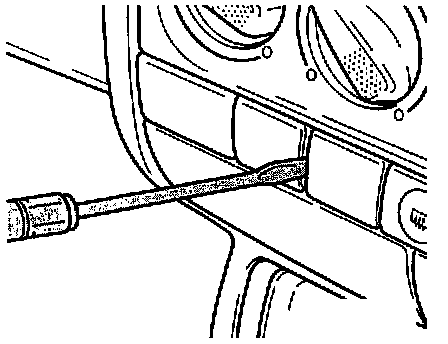
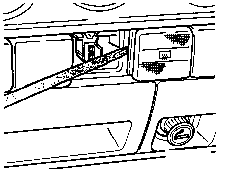

Power Window Lockout Switch: Service and Repair
Removing and Installing Rear Window Defogger Switch -E15-, A/C Switch -E35-, Window Lockout Switch -E39-, Left Rear Window Switch -E53-, And Right Rear Window Switch -E55-Removing:

(Removing rear window defogger switch shown.)
- Use screwdriver to carefully pry off cover plate located above ashtray (cover for data link connector, up to 07.93).

- Insert screwdriver between switch housing and instrument panel. Carefully pry switch from instrument panel.
- Remove switch connector.
Installing:
- Install switch connector
- Press switch into instrument panel until fully seated, and install cover plate.